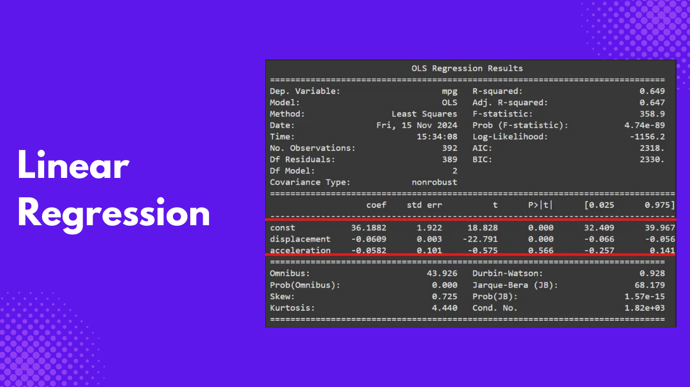
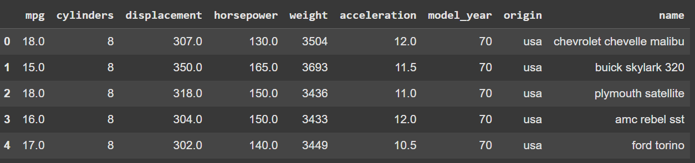

Let’s say you are a real estate agent and want to know the price of houses based on their characteristics. You will need records of available homes, their features and prices, and you will use this data to estimate the price of a house based on those features.
This technique is known as regression analysis, and this article will focus specifically on linear regression. You will also learn about the requirements your data should meet, before you can perform a linear regression analysis using the Python library statsmodels , how to conduct the linear regression analysis, and interpret the results.
What is Linear Regression?
Linear regression is a statistical technique used to model the relationship between a continuous dependent variable(outcome) and one or more independent variables (predictors) by fitting a linear equation to the observed data. This allows us to understand how the outcome variable changes to the predictor variables.
Types of linear regression
We have various types of linear regression.
- Simple Linear Regression: This examines the relationship between a single outcome variable and a single predictor variable.
- Multiple Linear Regression: This examines the relationship between a single outcome variable and multiple predictor variables.
Assumptions of linear regression
Before conducting a linear regression, our data should meet some assumptions:
- Linearity: The relationship between the outcome and predictor variables is linear. You can check this by plotting a graph of the predictor variable against the outcome variable and ensuring that the points on the graph form a straight line.
- Independence: Observations are independent of each other. That is, the occurrence of subsequent observations does not depend on the occurrence of previous observations. This is checked by observing the structure of the data or how the data was collected.
- Homoscedasticity: The variance of the errors is constant across all levels of the independent variables. The difference between predicted and actual values is almost the same in all observations. The Breusch-Pagan test is one way to check for this assumption.
- Normality: The outcome variable is normally distributed. That is, its graph should have a curve similar to a bell-shaped curve. You can check for this assumption by plotting the graph of the outcome variable.
- No Multicollinearity: In the case of multiple linear regression, independent variables are not highly correlated. If you have two predictors having a strong relationship, you need to drop one and select the other for your model. There are various ways of checking for this, such as using the correlation matrix or checking the variance inflation factor (VIF).
Linear Regression with Statsmodels
statsmodels is a Python library for statistical modeling, hypothesis testing, and data analysis. Take it as a Python library that makes Python feel like a statistical software. We will use it to demonstrate how to develop a linear regression model.
Before starting, ensure you have installed the following libraries:
pandasfor data wranglingmatplotlibfor data visualizationseabornto use thempgdatasetstatsmodelsfor regression analysis
In this tutorial, we will analyze the mpg dataset and perform a regression analysis to predict mpg (miles per gallon), measuring a car’s fuel efficiency. We will use the following variables as our predictor variables.
displacement- is the total volume of all cylinders in the engine, measured in cubic inches.weight- is the weight of the car measured in pounds.accelerationis the time a car takes from 0 to 60 mph.
Let’s load the needed libraries.
import matplotlib.pyplot as plt
import pandas as pd
import statsmodels.api as sm
import seaborn as sns
%matplotlib inlineLet’s load the mpg dataset and drop the row with missing values.
# Load the 'mpg' dataset from seaborn
df = sns.load_dataset('mpg')
# Drop rows with missing values
df = df.dropna()
df.head()
mpg dataset. Image by AuthorLet’s define the outcome and predictor variables,
# Define the dependent variable (y) and independent variables (X)
y = df['mpg']
X = df[['displacement', 'weight', 'acceleration']]Checking for assumptions
Before we perform the regression analysis, we need to check for some of the assumptions stated earlier.
Linearity
We can use a scatterplot to check the linearity of the outcome and each independent variable.
# Plot the X and y axis
fig, axes = plt.subplots(nrows=1, ncols=len(X.columns), figsize=(20, 5))
fig.suptitle("Scatter Plots with Linear Regression Lines", fontsize=16)
# Loop through each column in X and create a scatter plot with regression line
for i, col in enumerate(X.columns):
sns.regplot(ax=axes[i], x=X[col], y=y, scatter_kws={'alpha':0.5}, line_kws={'color':'red'})
axes[i].set_title(f'{col} vs mpg')
axes[i].set_xlabel(col)
axes[i].set_ylabel('mpg')
plt.tight_layout(rect=[0, 0, 1, 0.95]) # Adjust layout to fit the subtitle
plt.show()
The image above shows that mpg is linearly related to each predictor. If one of the plots were to show a curve shape, we would have to drop that predictor since it violates the assumption of linearity.
Independence
We can find this out from the nature of the data. For example, you have observations recorded based on time, such as hourly, daily, and so on. We can say these observations depend on each other, as we can’t have the next observation unless the previous one has already been recorded. However, in the case of the mpg dataset, the observations are drawn from various vehicles and are independent of each other. We can say that this particular assumption of independence is satisfied.
Normality
You can check this assumption by plotting a density plot of the outcome variable.
sns.kdeplot(y)
plt.xlabel('mpg')
plt.ylabel('Density')
plt.title('Density Plot of mpg')
plt.show()
The above plot shows that the variable mpg has a shape similar to a bell-shaped curve, which implies that this assumption is satisfied.
No Multicollinearity
You can investigate multicollinearity by calculating each predictor variable’s variance inflation factor (VIF). If you have predictors with VIF values greater or equal to five, you can plot a correlation matrix further to check the relationship between these variables.
from statsmodels.stats.outliers_influence import variance_inflation_factor
vif = pd.DataFrame()
vif['VIF'] = [variance_inflation_factor(X.values, i) for i in range(X.shape[1])]
vif['features'] = X.columns
print(vif)
The results show that all predictors have VIF values above five. Let’s plot a correlation matrix to see the relationship between these predictors.
# Calculate the correlation matrix
correlation_matrix = df[['displacement', 'weight', 'acceleration']].corr()
# Plot the correlation matrix as a heatmap
plt.figure(figsize=(8, 6))
sns.heatmap(correlation_matrix, annot=True, cmap='coolwarm', fmt=".2f", cbar=True)
plt.title("Correlation Matrix of Independent Variables")
plt.show()
You can see that displacement and weight are highly correlated. Let’s drop the weight variable from our predictors and check the VIF values again.
# Drop the weight variable
X = df[['displacement', 'acceleration']]
# Calculate VIF for each independent variable
vif = pd.DataFrame()
vif['VIF'] = [variance_inflation_factor(X.values, i) for i in range(X.shape[1])]
vif['features'] = X.columns
print(vif)
weight variable, and check VIF values again. Image by Author.The VIF values from above show that there is no multicollinearity present in the predictor variables. We can now proceed to build the regression model.
Building the regression model
Before proceeding to the regression analysis, let’s add a constant to the independent variables. This is done to account for the regression model’s intercept, which is the value of the dependent variable when all independent variables are zero.
# Add a constant to the independent variables
X = sm.add_constant(X)Let’s fit the linear regression model.
# Create and fit the OLS model
model = sm.OLS(y, X)
results = model.fit()
# Print the model summary
print(results.summary())
Homoscedasticity
To check this assumption, we need the results, which we can only get from the summary results. According to the Breusch-Pagan test, if the p-value we get is greater than 0.05, we reject the null hypothesis and conclude that the variance of the errors is constant in all observations.
from statsmodels.stats.diagnostic import het_breuschpagan
bp_test = het_breuschpagan(results.resid, results.model.exog)
bp_pvalue = bp_test[-1]
bp_pvalue
>> 1.0127670189356358e-05Although our data failed the test of homoscedasticity, we can still proceed with the regression model since most of the assumptions of linear regression are already satisfied.
Interpretation
There are a lot of metric in the regression summary, but the most important are the regression coefficients and the R-squared values.
Intercept and coefficients
The intercept coefficient 36.1882, is when all predictor variables are zero, that is, the mpg of a car with zero displacement and acceleration.
The displacement coefficient -0.0609 means that if a car’s displacement increases by a unit, its mpg will decrease by -0.0609 units. The p-value of 0.000, less than 0.05, means the relationship is statistically significant. This suggests that displacement and mpg are negatively related.
If the acceleration increases by one unit, the mpg is expected to decrease by 0.0582 units. However, the p-value is greater than 0.05, signifying that the relationship is not statistically significant.

Coefficient of determination
The R-squared indicates the amount of variability explained by the model, while the adjusted R-squared adjusts for the number of predictors in the model. It measures how well the model fits, and choosing the adjusted R-squared over the R-squared is advisable. The adjusted R-squared is 0.647, meaning the model explains 64.7% of the variability in the outcome variable mpg. This indicates a strong fit.

Conclusion
Linear regression is just one of the many regression analyses, but it’s easy to conduct and interpret as long as all the model assumptions are met. With what you have learned in this article, I am sure you can apply linear regression to any data you choose and accurately interpret it. Here are some extra resources that explain more of what we have touched in this article.
Adjusted R-Squared: A Clear Explanation with Examples
R-squared vs Adjusted R-squared for Regression Analysis
Homoscedasticity and heteroscedasticity
Heteroskedasticity vs. Homoskedasticity→ Assumption of Linear Regression
The normality assumption in linear regression analysis
Need Help with Data? Let’s Make It Simple.
At LearnData.xyz, we’re here to help you solve tough data challenges and make sense of your numbers. Whether you need custom data science solutions or hands-on training to upskill your team, we’ve got your back.
📧 Shoot us an email at admin@learndata.xyz—let’s chat about how we can help you make smarter decisions with your data.